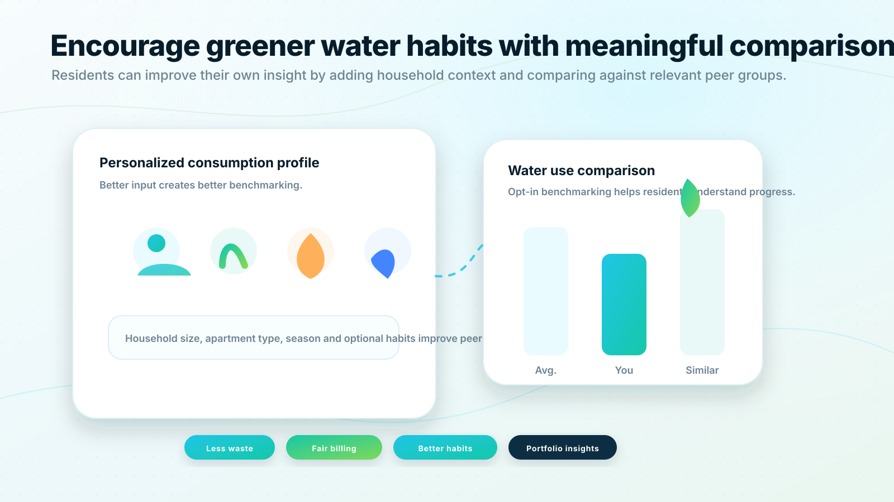

Personal consumption trends:
Clear views of water use over time.
Sustainable water intelligence
QualMeters supports greener water use by giving residents and organizations the data they need to understand consumption, detect waste and compare progress over time.

Sustainability
When residents only see water costs after the fact, it is difficult to connect daily choices with total consumption. QualMeters makes water use visible through understandable charts, comparisons and alerts.
Sustainability
Simple building averages can be misleading. QualMeters should allow residents to add optional context, such as household size, so comparisons become more meaningful. A single-person household should not be evaluated in the same way as a family of five.
Sustainability
Clear views of water use over time.
More accurate peer groups when users add context.
Early detection supports reduced waste and lower risk of water damage.
Organizations can compare buildings and identify improvement opportunities.
Practical tips can be shown where they are most relevant.
Sustainability
QualMeters can support conservation programs, resident engagement and ESG reporting with reliable consumption data.
Discuss sustainability goalsSales consultation
Share your building type, meter count, communication requirements and integration needs. QualMeters will help you map the right deployment model and next steps.
No obligation. We will start by understanding your existing meters, buildings and goals.
 Request a demo
Request a demo